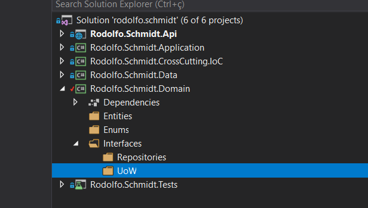
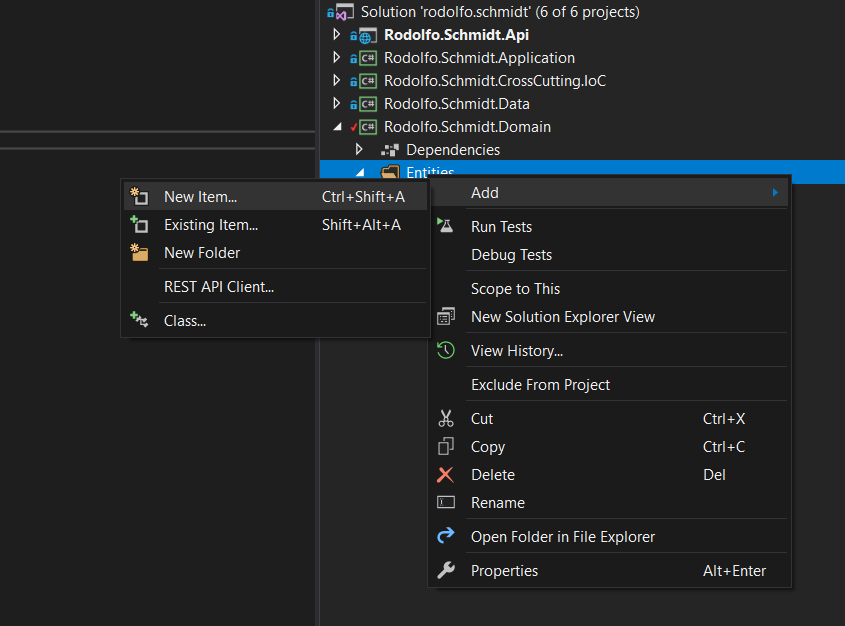
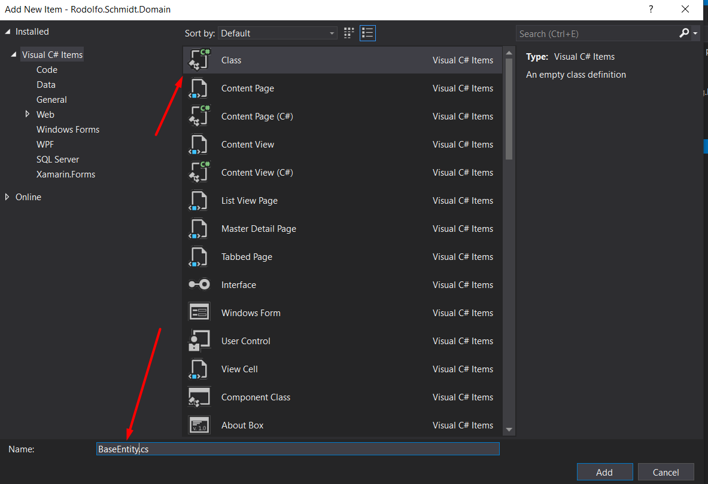
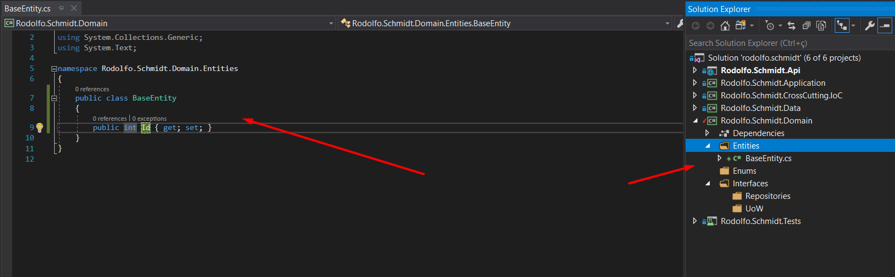
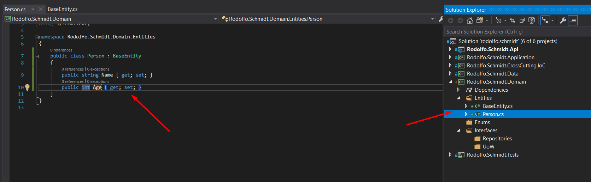
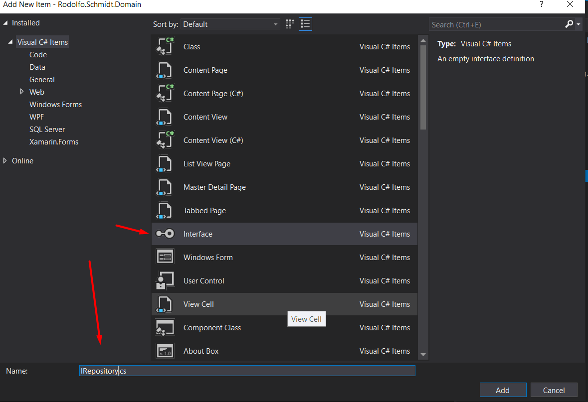
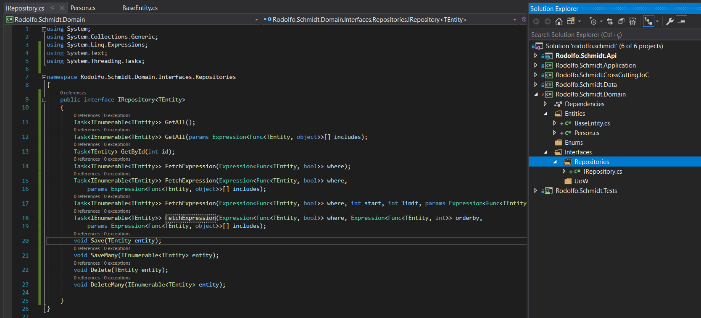
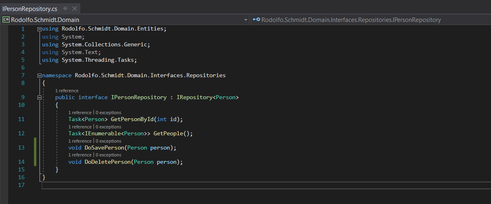
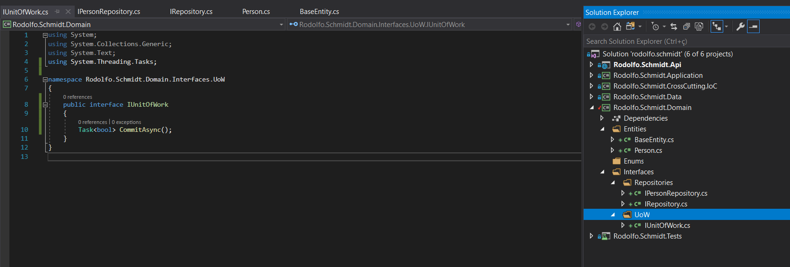

Creating Domain Layer
In this session we will create the full domain layer of our application.
Creating directories
First let's create the directories that will be used in our project. We will create the directory of entities, enums and interfaces. Within interfaces we will create the directory of the repository interfaces and our unit of work (UoW).

Creating the Files
Before we create our entity that we will work on in our project let's create a base entity to avoid code repetition. Before we create our entity that we will work on in our project let's create a base entity to avoid code repetition. To create this entity we will create a class by right-clicking on the entities directory we will create the class and call it BaseEntity, it will contain the Id that will be reused in all entities of our project in the Domain layer.



Now let's create the person entity that we will use to work on our project. Remembering that for good practices you should NOT "dirty" the class. In the domain class should contain only the clean attributes and nothing more! Other configurations used on screen or for database purposes for ORM configuration purposes will all be made in their respective layers.

Now let's create our interfaces starting with the generic repository. Always remember that by definition interfaces start with "I" always. Follow the same steps to create a class just by differentiating the interface option.

Since every interface is a contract, let's get our contract ready to implement in the Data here layer session. As an initial suggestion I already leave the code below with these defined methods and you have complete freedom to enrich your generic repository even more.
using System;
using System.Collections.Generic;
using System.Linq.Expressions;
using System.Text;
using System.Threading.Tasks;
namespace Rodolfo.Schmidt.Domain.Interfaces.Repositories
{
public interface IRepository
{
Task<IEnumerable<TEntity>> GetAll();
Task<IEnumerable<TEntity>> GetAll(params Expression<Func<TEntity, object>>[] includes);
Task<TEntity> GetById(int id);
Task<IEnumerable<TEntity>> FetchExpression(Expression<Func<TEntity, bool>> where);
Task<IEnumerable<TEntity>> FetchExpression(Expression<Func<TEntity, bool>> where,
params Expression<Func<TEntity, object>>[] includes);
Task<IEnumerable<TEntity>> FetchExpression(Expression<Func<TEntity, bool>> where, int start, int limit, params Expression<Func<TEntity, object>>[] includes);
Task<IEnumerable<TEntity>> FetchExpression(Expression<Func<TEntity, bool>> where, Expression<Func<TEntity, int>> orderby,
params Expression<Func<TEntity, object>>[] includes);
void Save(TEntity entity);
void SaveMany(IEnumerable<TEntity> entity);
void Delete(TEntity entity);
void DeleteMany(IEnumerable<TEntity> entity);
}
}

With our interface of our generic repository created we will create the repository of our entity "Person" as code below.
using Rodolfo.Schmidt.Domain.Entities;
using System;
using System.Collections.Generic;
using System.Text;
using System.Threading.Tasks;
namespace Rodolfo.Schmidt.Domain.Interfaces.Repositories
{
public interface IPersonRepository : IRepository<Person>
{
Task<Person> GetPersonById(int id);
Task<IEnumerable<Person>> GetPeople();
void DoSavePerson(Person person);
void DoDeletePerson(Person person);
}
}

And finally we will create the interface of our unit of work responsible for commiting all operations done by ORM (EF) more details in the layer session data here.
using System;
using System.Collections.Generic;
using System.Text;
using System.Threading.Tasks;
namespace Rodolfo.Schmidt.Domain.Interfaces.UoW
{
public interface IUnitOfWork
{
Task<bool> CommitAsync();
}
}

Our domain layer is ready, we just leave the enums directory created for later if needed.